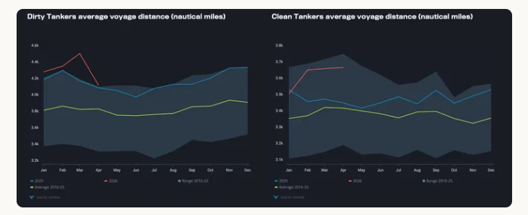
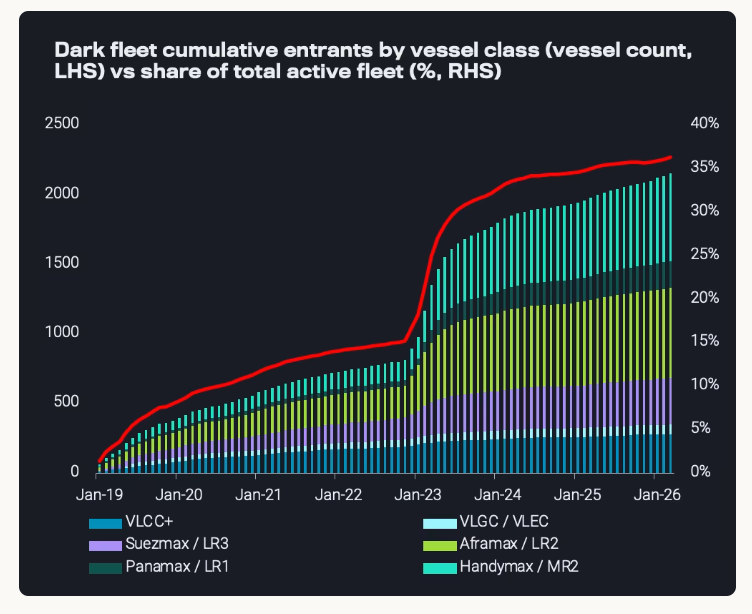
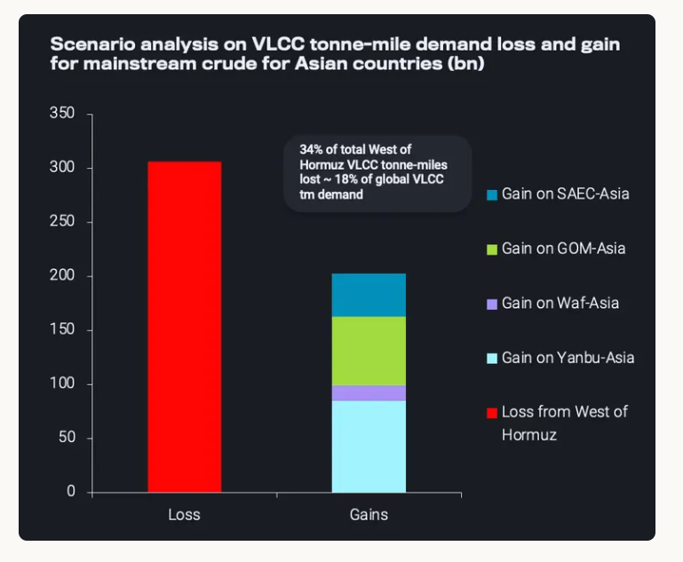
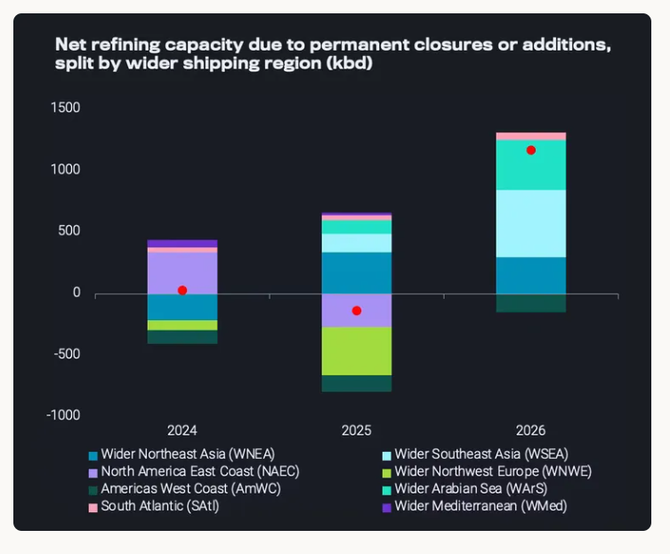

Geopolitical shocks and trade fragmentation and refinery-production relocations have lengthened tanker voyages, and increased freight volatility.
Over the past four years, tanker markets have been reshaped by geopolitical shocks, with freight volatility increasingly driven by inefficiencies rather than pure cycles. The Russian invasion of Ukraine triggered a major reconfiguration of crude and product flows, extending voyage distances and tightening effective fleet supply. This was compounded by disruptions such as the Houthi attacks in the Red Sea, which altered routing, increasing vessel supply requirements.
Outside geopolitics, shifts in new refining capacity, crude oil production growth, particularly in the Americas, and infrastructure developments have reinforced longer-haul trade patterns. More recently, constraints around the Strait of Hormuz have added further uncertainty. Overall the market is characterised by structurally longer distances due to fragmented trade flows and a multi-tiered segmented fleet especially in the crude market.
The first major shift followed the Russian invasion of Ukraine, following EU and US bans on Russian oil that triggered a fundamental reshuffling of crude and product flows during the start of 2023.Russian crude moved east toward China and India, while Europe increased reliance on the Atlantic Basin. In products, middle distillates saw the largest disruption: Russian diesel was redirected to more distant markets such as West Africa and Brazil, while Europe turned toward the Middle East, India, and the US. The breakdown of the short-haul Russia–Northwest Europe trade forced longer-haul movements both out of Russia and into Europe.
A second disruption came from the Houthi attacks in the Red Sea during the start of 2024. While origin–destination patterns remained broadly intact, routing shifted materially. Clean products were most affected, as Europe’s dependence on middle distillates—particularly jet fuel from the Middle East and India—left limited alternatives. East–West flows, already growing, were rerouted via the Cape of Good Hope, effectively doubling voyage distances. This dynamic persists despite a recent easing in attacks in the Bab el-Mandeb strait. The result was a sharp uplift in clean tanker earnings relative to crude, at times making VLCC clean trades viable. Conversely, in crude, Europe reduced Middle East exposure, consolidating Suezmax employment in the Atlantic alongside Aframaxes.

Longer voyage distances, which have tightened effective fleet supply, are one form of geopolitically driven inefficiencies—but not the only one. The expansion of the dark fleet, shaped by sanctions policy, has also constrained the mainstream or Tier-1 crude tanker market. Fleet segregation following the Russian invasion of Ukraine which was followed by tighter sanction enforcement in 2025 accelerated the migration of older vessels into non-compliant trades, reducing mainstream tanker availability. By early 2026, only around 60% of Suezmaxes and 55% of Aframax/LR2s were operating within the mainstream fleet.

Shifting refinery configurations, terminal expansions, and production growth have further reshaped flows, particularly in the Americas. For Aframaxes, Mexico’s push for self-sufficiency reduced short-haul exports to the US Gulf, which in 2026 is partly offset by increased Venezuelan heavy barrels following the easing of OFAC restrictions, both events supported longer distances. Meanwhile, Canada’s TMX expansion since May 2024 had already created new long-haul Aframax employment toward the US West Coast and Asia.
For Suezmaxes and VLCCs, demand growth has been driven by rising exports from the East Coast of South America. Crude exports from Guyana, Brazil, and Argentina have nearly doubled over five years, reaching 3.5 mbd in 2026, with 60% and 27% directed to Asia and Europe, respectively. Geopolitical pressure on India to diversify away from Russian crude in the second half of 2025 has also reinforced demand for these Atlantic Basin barrels. The cumulative result of higher Americas to Asia flows has meant tonne-miles for crude tankers out of the Americas has doubled since 2021.
On the clean product side, the start-up of Mexico’s Dos Bocas refinery has supported MR demand. Although US Gulf exports to Mexico have declined by over 20% from their 2022 peak, flows to South America’s West Coast have increased, driven by stronger transport and power demand. At the same time, refinery closures on the US West Coast, notably Valero Benicia (170kbd) and P66 Los Angeles (139kbd) refineries have increased import reliance from Northeast Asia and the Caribbean, including re-exports of US products via the Caribbean. This has resulted in a net increase in MR tonne-miles of around 30% over the past five years.
More recently, tensions between the United States and Iran and the resulting disruption in the Strait of Hormuz have once again rewritten tanker flows. Supply constraints in Asia have triggered a sharp shift of Atlantic Basin barrels into the Pacific, tightening vessel availability and sustaining rate volatility. However, a prolonged closure of transits throughout the summer would be structurally negative: lost Middle East volumes cannot be fully replaced, leading to higher prices, demand destruction, and reduced seaborne trade. Our estimates suggest a sustained disruption of transits in the following months could reduce VLCC tonne-mile demand by ~15 - 20% and clean tanker demand by ~7%, indicating that longer Atlantic–Pacific routes cannot fully offset lost Middle East employment. While constrained logistics had brought vessel availability into focus for trading decisions a prolonged supply shock would shift attention toward cargo availability.

Looking ahead, uncertainty remains high, but several trends are evident. A normalisation of flows through the Strait of Hormuz would restore Middle East exports and ease routing inefficiencies. However, Asian buyers are unlikely to revert to pre-crisis reliance on regional supply. Even with a reopening, a full resolution between the United States and Iran appears unlikely, leaving a fragile backdrop. As a result, Asian importers are expected to maintain diversified sourcing, retaining elevated exposure to Atlantic Basin barrels.
This is reinforced by oil supply growth trends. Following the easing of OFAC restrictions, Venezuelan barrels have begun to re-enter mainstream trade. Plans are in place to restore exports to around 2.5 mbd by 2035, while the current shortage of heavy barrels could accelerate infrastructure recovery.
The East Coast of South America—particularly Brazil, Guyana, and Argentina—is set to drive further export growth, supported by new FPSOs and expanding infrastructure. Argentina’s transition toward deepwater export capacity will enable larger vessels and could intensify competition with US shale. In total, regional production could rise by roughly 2.5 mbd until 2030, largely serving European and Asian markets and favouring longer-haul trades.
Elsewhere, spare capacity and new supply growth prospects remain limited, with the main exceptions being Saudi Arabia and the United Arab Emirates. The latter’s move away from strict OPEC quotas introduces flexibility, potentially allowing export increases of up to 1.5 mbd. From 2027, depending on the oil supply background and oil price levels. Overall, this reinforces the shift toward non-OPEC-driven supply growth.
Apart from the prospect of growth for compliant supplies, buyer behaviour on grades subject to sanctions could act as a swing factor for mainstream freight. Demand from countries such as India for sanctioned barrels could influence freight dynamics in a post-conflict environment. As discussed earlier prior to the US-Iran conflict, tight sanctions created logistical strain in the dark fleet, supporting mainstream freight. With waivers easing dark fleet constraints, the need to pull vessels in from mainstream fleet is less incentivised, while buyers have resumed lifting Russian cargoes, reducing mainstream tanker demand.
In clean products, the refining landscape is also poised to shift. While recent years reflected net capacity declines, 2026 is expected to bring over 1 mbd of net new additions. Importantly, closures have been concentrated west of Suez, while new capacity is emerging east of Suez—particularly in Asia Pacific and the Middle East. This imbalance points to structurally longer product flows, especially east-to-west. For shipping, this supports sustained tonne-mile demand, with larger vessels on long-haul routes and smaller tankers serving regional distribution, particularly in infrastructure-constrained ports such as the Mediterranean. For this to materialise, however, a normalisation of transit through Hormuz would be required; in the opposite scenario, flow patterns will stay as is in the new reality post the US-Iran was, from west-to-east instead.

Against this backdrop, while geopolitical inefficiencies remain highly uncertain and dependent on evolving policy enforcement, they are unlikely to dissipate completely any time soon. What is more important is that, even if some of these inefficiencies fade, the market is increasingly shifting into a structurally supportive environment for tonne-miles. Oil production is increasingly growing in the Americas, while demand remains in Europe and Asia, which naturally creates longer voyages. At the same time, changes in refining locations are reinforcing these longer routes. The result is a world in which longer-haul trade routes are becoming embedded in the system, supporting sustained tanker employment even outside periods of geopolitical disruption.
Data Source:Vortexa